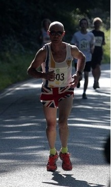
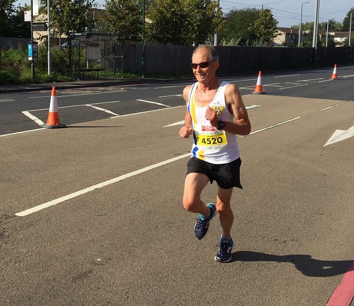

At the Hospice in the weald 10k at Tunbridge Wells on 24th September, Nick Humphrey-Taylor was 6th overall and Andrew Mead supplemented his artistic endeavours for the hospice with 21st place in the 2017 race. Anna Humphrey Taylor and Lionel Steilow also ran the tough hilly race in warm sunny conditions. The SAC results were:
| Pos | Num | Name | Time | Gender | GenPos |
|---|---|---|---|---|---|
| 208 | 270 | Anna Humphrey Taylor | 00:55:56 | Female | 46 |
| 6 | 271 | Nick Humphrey Taylor | 00:40:37 | Male | 6 |
| 21 | 367 | Andrew Mead | 00:43:20 | Male | 20 |
| 376 | 552 | Lionel Steilow | 01:02:00 | Male | 253 |
The full results are here.

And James Graham ran the Robin Hood Half Marathon in Nottingham which he said was "rather hilly". James was 156th overall and second M60 in a large field in a chip time of 1:30:03. The full results are here.
Finally, Jim Fitzmaurice was 81st and first M70 in the Highway 10k in Chelsfield in a chip time of 56:54. Full results here.